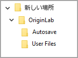
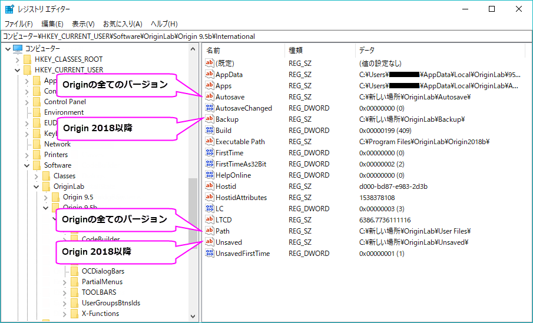

下記の手順でOriginフォルダをクラウド同期サービスから移動する際の注意
Origin2018またはOrigin2018 SR1を使用している場合は、Origin2018b以降のバージョンにアップグレードする必要があります。次の手順では、Origin 2018または2018 SR1でWindowsのクラッシュを防ぐことはできません。これらを試してもクラッシュする可能性があります。
最終更新日：2023/5/18
Originユーザーファイルフォルダ（または他のOrigin関連フォルダ）が「DropBox」、「Googleドライブ」（バックアップと同期）、「Microsoft OneDrive」などのクラウド同期サービスに設定されている場合、次の問題が発生する可能性があります。
たとえば、非線形曲線フィットダイアログでフィット関数が見つからないなどです。
del –path
ローカルディスクに「バックアップ」を作成します。例えば、OneDriveでの場合、ファイルのステータスを「このデバイス上で常に保持する」（緑色の丸いアイコンと白いチェックマークが付いています）に変更します。これらのファイルはデバイスにダウンロードされ、オフラインの場合でも使用できるようになっています。
Originを起動できず、以下のようなエラーメッセージが表示されます。
The script starting with
...
is too long.Script reading aborted
この問題は、DIB読み取り不可というエラーも表示します。
ローカルディスクに「バックアップ」を作成します。
詳細は、上述の問題1の対処法 > 方法2 セクションを参照してください。
ユーザファイルフォルダの場所を、クラウド同期サービスフォルダ内ではないファイルシステム上の任意の場所に変更してください。
詳細は、後述の問題3の対処法 セクションを参照してください。
Originを起動した時やOriginの実行中にWindows 10がフリーズまたはクラッシュします。使用しているクラウド同期サービスによってエラーメッセージは異なります。例えば、
Windows 10では以下のようなエラーメッセージが表示されます。
以下の情報が一緒に表示される場合もあります。
停止コード: SYSTEM_SERVICE_EXCEPTION
失敗した内容: cldflt.sys
OriginのUser Filesフォルダ（および場合によっては他のフォルダも）をクラウド同期サービスから移動します。
下記の手順でOriginフォルダをクラウド同期サービスから移動する際の注意 Origin2018またはOrigin2018 SR1を使用している場合は、Origin2018b以降のバージョンにアップグレードする必要があります。次の手順では、Origin 2018または2018 SR1でWindowsのクラッシュを防ぐことはできません。これらを試してもクラッシュする可能性があります。 |
WindowsファイルエクスプローラーからDropbox、Googleドライブ、またはOneDriveフォルダを検索し、該当のファイルを見つけます。ナビゲーションウィンドウにショートカットが表示されていることがあります。その場合はUser Filesという名前のサブフォルダをフォルダの検索を使用して検索します。
下図は、OneDriveに「User Files」フォルダがある例です。
ナビゲーションウィンドウにクラウド同期サービスのショートカットアイコンが見つからない場合は、サービスがインストールされていないか、またはフォルダを見つけるためにファイルシステムを深く掘り下げなければならないかもしれません。
サービスがインストールされていない場合や、同期フォルダにOriginのユーザファイルフォルダが配置されていない場合はこの問題は発生していません。OriginLabのテクニカルサポートにコンタクトしてサポートを受けてください。(日本では株式会社ライトストーンがサポートを承っています。)
新しい場所は、クラウド同期サービスフォルダ内ではないファイルシステム上の任意の場所を指定してください。また、読み取りおよび書き込み権限があることを確認してください。
決定した新しい場所で、 「OriginLab」という名前のサブフォルダを手動で作成します。次に、使用しているOriginのバージョンに基づいていくつかのサブフォルダを作成します。スペルと大文字の確認は重要です。
| Origin 2018b以降の場合 | Origin 2017以前の場合 |
|---|---|
| 次のサブフォルダを追加します：User Files、Autosave、Backup、Unsaved | 次のサブフォルダを追加します：User Files、Autosave |

|
 |
これらのフォルダへのフルパスを書き留めておく必要があります。
Originを起動してWindowsがクラッシュしないようにするには、OriginのUser Filesフォルダをリセットする別の方法が必要です。
「レジストリエディタ―」を以下の2通りの方法で開きます：
regeditと入力します。regedit Run commandを選択します。または：
regeditと名前ボックスに入力してOKをクリックします。レジストリエディターが開いたら、ダイアログの左の枠内で以下のパスを探します：
Computer\HKEY_CURRENT_USER\Software\OriginLab
OriginLabレジストリキーには使用しているPCにインストールされているOriginのバージョンごとに1つ以上のサブキーが表示されます。使用しているOriginのバージョンのキーを選択して展開し、それのInternationalサブキーを選択します。以下はOrigin 2018bの例です：

"Path"の値で新しいUser Filesフォルダの場所を設定します。
レジストリエディターの右枠内で、名前がPathの値を探します。
"Path"を右クリックします。C:\your New Location\OriginLab\User Files\
"Autosave"の値で新しいAutosaveフォルダの場所を設定します。
レジストリエディターの右枠内で、名前がAutosaveの値を探します。見つからない場合は以下の手順を行います：
手順#1:
手順#2:
続いて、上記の「"Path"の値で新しいUser Filesフォルダの場所を設定します。」と同じ手順で、新しい「Autosave」値を変更します。
| Note：
Origin 2018b以降の場合は既存の手順「"Autosave"の値で新しいAutosaveフォルダの場所を設定します。」 と同様の手順を他の2つのフォルダに対してあと2回繰り返す必要があります。最初に"Backup"で行い、続けて"Unsaved"で行います。 |
Results
レジストリの変更の最終結果を以下に示します。 
User Filesフォルダと他の関連フォルダを移動したので、Originを起動することができます。これが正しく動作している場合は今後は新しいフォルダを使用する必要があります。
キーワード：Windows,Origin,クラッシュ,フリーズ,起動,開始,立ち上げ,実行,実行,ブルー,ブルースクリーン,BSOD,停止コード, SYSTEM_SERVICE_EXCEPTION,失敗した内容,cldflt.sys,OneDrive,Googleドライブ,バックアップと同期 DropBox,Your PC ran into a problem and needs to restart.エラー情報を収集しています。再起動できます。